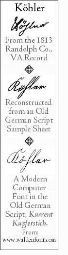
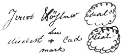

Articles of an agreement made
concluded and entered into
this 23
rd of April
1813 Between Elizabeth Cade of Randolph County & State
of Virginia of one part &
Jacob Keylor of said
County & State of the other
Wittnesses that the said
Elizabeth Cade doth rent unto the said
Jacob Keylor
one farm containing three hundred thirteen acres laing
& being on cheat river which he is to have & to
Hold for the term of twelve Years unmolested by her or her
heirs & the said
Jacob Keylor for his part doth
agree to Give unto the said Elizabeth Cade after the first
Year one third that is raised of the Ground that is now
unclearded and cleared & it is further understood that
the said
Jacob Kayler is to keep the said Elizabeth
Cade in fire wood during this time & tend one field in
Corn during this season & take care of it for her
& also he is to deliver her thirds at her home &
also he is at the completion of the twelve years give the
said Elizabeth Cade quiet & peaceable possession
without further Contract under a penalty of five hundred
Dollars.
Signed sealed in the presence of
Benjamin Marh
Wm Ingram
|
|
Jacob Köhler (seal)
her
elizabeth + Cad (seal)
mark
|
Randolph County April Term
This Deed of Lease was produced ---- and proven by the oath of Benjamin Marh
a Witness thereto and ordered to be recorded.
Teste A. Earl clk RC

NOTE:
All the handwriting on the recording of this Deed of Lease appear to be in the same
hand except the name of Jacob Köhler. That name is in a different hand and is in what
is called
Old German Script.
The deed could have been written by a local lawyer or other person who was not aware of
the actual spelling of the Köhler name, hence we see Keylor and Kayler in the deed. However the Köhler
spelling reveals the true German spelling of the name. It was the normal practice of the County Clerk to accurately copy
the original document. Normally, the clerk’s copy of the document would not contain original signatures. Still,
this deed has the anomaly in that the one name, Jacob Köhler is not in the clerk’s hand. Could this be in
Jacob Köhler hand? Or maybe the clerk made serious attempt to copy the name accurately.
The next question is, How could Köhler become Keylor or even Kayler?
The answer is
phonetics. English speaking, non-German writers often spelled German names
the way they
sounded.
We see the
ö, a letter
o, with the diacritic (diacritical
mark)
.. which is called the
umlaut. That letter,
ö, does not sound like
the letter
o. It sounds more like the letter
a.
For clarity, we have shown the name Köhler from the original recording plus two created
versions in the Old German Script. Notice the third letter which looks exactly like the long
s
seen in American scripts until the mid-1800s. In the Old German Script, it is the letter
h, not
s. Here is
an example of the American long
s:
Lastly, we used a commercially available font,
Kurrent Kupferstich, from
Walden Fonts Co., to create the third example on our graphic.
This font is a good tool for those wanting to learn Old German Script.

From the 1813 Randolph Co. VA recording.

{kind=link}